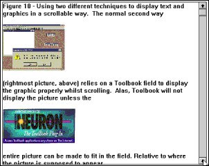
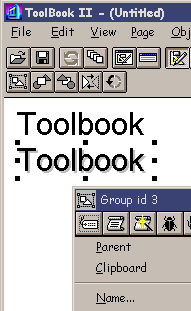
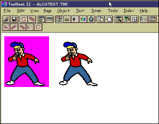

Australian Toolbook User Group


Preventing the abrupt clipping of Graphics in a scroll field

Question: It's nice that you can have graphics in a scrolling field, but there seems to be a side effect (or bug) associated with large graphics. When the character anchor goes off the visible portion of the field, so does the graphic. This is really bad with "tall graphics". A related effect is that you seem never able to see the "bottom" of a graphic that is taller than the text box. Any remedies for this? I use MMTBK 3.0a, is it different in 4.0? - Charles Jameson
The behavior is the same in MTB4. My only suggestion is to place your graphic in a scrollable viewer rather than in a scrollable field.
Alas, Toolbook (all versions as of Oct 1998 including version II / 6.1) will not display a picture in a field unless the entire picture can be made to fit in the field (relative to where the picture is supposed to appear). Watch the animated GIF above, to see the effect you get whilst scrolling. Now look at the following solution:
The graphic in Figure 10, right-side, has been pasted into a regular Toolbook field. When you scroll the field, the graphic will suddenly jump out of sight - Toolbook does not allow field graphics to be partially visible. This is an unfortunate limitation.
The graphic in Figure 10, left-side, however, is on a page being displayed by a viewer. Toolbook’s Viewers let you have partially visible graphics, as shown. Problem Solved! However in using this technique you will have put everything you originally wanted to display in a field - on a page instead. Typically you would make the page size very tall. You would also have to ensure that the viewer appeared at the required coordinates in order to blend in with your interface. This may take a little experimenting - and remember to test across a few different screen resolutions.
How to create text with a Drop Shadow
Question: Reviewing what's available on the TB II 4.0 package, we can't find how to do a 'drop shadow' text. Anyone help us with what is probably a real basic question?
I don't remember which app I found this in but on the TB II disk there is a tutorial that has a group of 2 text fields. The nice thing about this one was an idle handler that allowed you to input text into one field and when you switched to reader mode it set the "shadow" text to the same text.
I use that one alot. Not that I'm lazy or anything.
If you want to create the illusion of drop text while still using just toolbook text objects, the best I can do is this:
I use label fields (transparent). I create my original text and when I have the font and size as I want them, I duplicate the field. I then change the color of the text field that will be the shadow part (usually to black -- but this depends on the effect you're going for). Then, I select one of the fields and use the arrow keys to nudge it into the proper position. Then, I group the two text fields together.

As someone else has suggested, though, you might prefer to use some kind of 3D or paint environment and create what you want as a graphic. Then, you can import the graphic into ToolBook.
In respect to 3d text, one good route is to use Asymetrix' 3D/FX.
Another really good way of getting a drop shadow effect is with Paint Shop Pro for Windows 95/NT.
It takes about a 1 minute to create the text, color it, then add the drop shadow, crop and save as a transparent gif for import. There are several other really nice effects available also including chisel and cutout. A buttonize effect is also useful for certain graphics.
Transparent / Chromakeyed Bitmaps Solution by Martha H. Weller, Ph.D.
I was looking at the New Features Demo (features.tbk) in toolbook 4.0. The Table of Contents in that book contains a transparent field with a transparent bitmap of a pointing hand. I tried to recreate this transparent bitmap effect with other bitmaps, but I have not been able to do it. There must be something special with that specific bitmap resource, because I can paste it into other fields or edit it and it remains transparent. Does anyone know how it was done?

The bitmap resource (as you can see in the resource editor) has a magenta fill around the hand. To achieve the transparent effect, the bitmap's chromakey has been activated and set to magenta. This is done via openscript:
--Sets transparency for a bitmap resource when it --is displayed in the text of a field or a button useChromakey of bitmap "hand" = true keyColor of bitmap "hand" = magenta
 An Easier Way
An Easier Way
Instead of using openscript code, if you have Toolbook II version 5 or 6 then you can:
1. Select the imported graphic
2. Choose from the menu object / paintobject properties. Check the box ‘UseChromakey’ and select the appropriate fill color.
To access thousands more tips offline - download Toolbook Knowledge Nuggets